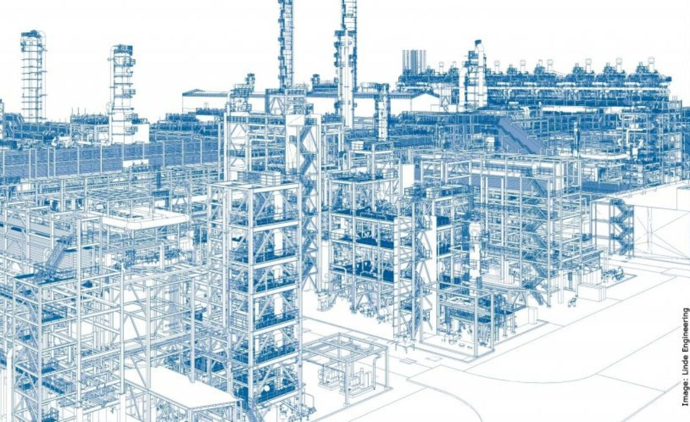

1. UVOD
HIP Petrohemija doo Pančevo realizuje projekat Reinstrumentacija fabrike Etilen na lokaciji Pančevo u fabrici Etilen u dve faze. Ovim projektom je obuhvaćena II faza.
Projekat obuhvata isporuku:
A. upravljačkog DCS i
B. blokadnog ESD SIS sistema, shodno usvojenoj strategiji realizacije projekta koja podrazumeva proširenje već implementiranih sistema u fazi I.
C. instrumenata u polju sa pratećim materijalom i opremom,
D. Izvođenje radova montaže
E. Puštanje u rad
Strategijom realizacije ovog projekta definisano je postojanje dva osnovna ugovora i to oba po principu fiksne cene i modelu ključ u ruke (Lump Sum Turn Key – LSTK).
Shodno usvojenoj strategiji o postojanju dva osnovna ugovora za realizacije projekta definisani su elementi oba ugovora i to na sledeći način:
-kompletna oprema za proširenje postojećeg sistema kao i sva oprema u polju potpada pod prvi ugovor što je detaljno definisano u poglavlju 15,
-drugi ugovor koji bi se sklapao po završetku izrade Projekta za izvođenje (PZI) obuhvata nabavku instalacionog materijala, radove na montaži opreme u polju kao i puštanje proširenog sistema i opreme u polju u rad.

Strategija definiše jednog ponuđača za oba ugovora kome se omogućava da integralnim sagledavanjem ovog dokumenta predloži i uz saglasnost investitora proširi obuhvat isporuke prvog ugovora, pozicijama iz drugog ugovora, kako bi se izbegli mogući rizici produženih rokova isporuke nastalih aktuelnom situacijom.
Ovde se prvenstveno misli na instalacioni materijal koji pripada drugom ugovoru, a postoje saznanja o produženim rokovima isporuke (kablovi, materijal za impulsne vodove, razvodne kutije i slično).
Pri ovim sagledavanjima ulazni parametar je planski zastoj fabrike Etilen predviđen za septembar 2023.godine, kao i intencija da se zbog obima posla određena količina montažnih radova koje je moguće bezbedno izvesti u radu fabrike obavi tokom 2023 godine pre planskog zastoja.
Ovim projektnim zadatkom se definišu svi potrebni uslovi za efikasnu modernizaciju postojećeg upravljačkog i blokadnog sistema fabrike Etilen. Nakon završetka II faze reinstrumentacije fabrike Etilen očekuje se:
• bezbednije i kvalitetnije vođenje procesa sa minimiziranjem razloga za prekid proizvodnje zbog neispravnosti upravljačkog sistema odnosno, potpuna kontrola procesa proizvodnje
• brži odziv sistema upravljanja (elektronski prenos umesto pneumatskog)
• efikasnije korišćenje procesne opreme
• optimizacija u domenu potrošnje procesnih fluida i energije
• redundantnost blokadnog i upravljačkog sistema
• potpuna transparentnost upravljanja, uz mogućnost analiziranja proteklih događaja (historijan)
• značajno niži troškovi održavanja
• veća raspoloživost i pouzdanost rada postrojenja. Investitor - HIP Petrohemija a.d, Pančevo, Republika Srbija
Projekat - Projekat Reinstrumentacije fabrike Etilen – II faza
Izvođač - Odabrani Izvođač
Podizvođač - Preduzeće koje za Izvođača može vršiti usluge projektovanja, proizvodnje i isporuke opreme, materijala i izvođenja radova
Kick of Meeting, KoM - Inicijalni sastanak
MCC - Motor Control Centre
FAT - Prijem i kontrola kod isporučioca
ZOP - Zaštita od požara
SAT - Prijem i kontrola kod investitora
DCS - Upravljački sistem
ESD - Blokadni sistem
RIOS - Ulazno/Izlazne periferije (Remote I/O system)
RP - Razvodno postrojenje
AKZ - Antikoroziona zaštita

Dijagram znacajnih datuma na Projektu (nabavka opreme i instaliranje sistema) radni paket 1

Dijagram znacajnih datuma na Projektu (montazni radovi) radni paket 2

1.1. Cilj projekta
1.2. Definicije